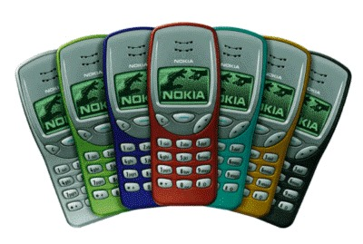

GJ Tech
Mobile Computing & Android Overview
Lecture Topics (10 Lectures)
- A brief history of Mobile
- Types of Mobile Phone Generations
- The Mobile Ecosystem
- Types of Mobile Applications
- Mobile Information Architecture
- Android Versions
- Features of Android
- Android Architecture
- Installing Android SDK Tools
- Configuring Android in Android Studio IDE
- Android Development Tools (ADT) - Covered within Android Studio setup
- Creating Android Virtual Devices (AVD)
- Simple Mobile Application Example
A Brief History of Mobile
Mobile devices have evolved far beyond simple voice communication tools. They now allow for creation and sharing of voice, music, video, text, and images. Users can access the internet, stream media, use GPS, play games, and interact with augmented reality.
Their power depends on both the mobile network infrastructure and device capability. A mobile phone is a portable device that connects to a telephone network via radio frequency. Modern mobile phones use cellular architecture and are commonly known as cell phones.
Since the early 2000s, mobile phones have included features like SMS, MMS, email, internet access, Bluetooth, business apps, gaming, and photography. Devices offering such capabilities are termed smartphones.
The first handheld mobile phone was demonstrated in 1973 by Martin Cooper and John F. Mitchell at Motorola, weighing about 2kg. The first commercial mobile phone, the DynaTAC 8000x, was released in 1983.
Mobile Technology Networks & Infrastructure
Platform SDKs & App Ecosystem
Each mobile operating system—such as Android, iOS, Blackberry OS, Bada OS, and Symbian OS—provides its own Software Development Kit (SDK). These SDKs enable developers to build applications specific to each platform. Developers also get access to a marketplace (like Google Play or the App Store) to distribute and monetize their applications globally.
Historical Milestones
- April 4, 1973: Martin Cooper of Motorola made the first public handheld mobile phone call using a prototype DynaTAC.
- 1917: Finnish inventor Eric Tigerstedt filed a patent for a pocket-size folding telephone.
- Early mobile communication used analog radio signals for ships and trains.
- 1984: Motorola launched the first commercial handheld mobile phone—DynaTAC 8000X.
- 1979: Japan’s NTT launched the first commercial automated cellular network.
Generations of Mobile Technology
1G – First Generation (1980s)
Used analog technology. Enabled basic voice calls. MTS and IMTS systems were used in North America.
2G – Second Generation (1991)
Introduced digital cellular technology with GSM in Finland. Enhanced call quality and added SMS support.
3G – Third Generation (2001)
Introduced in Japan by NTT DoCoMo using WCDMA. Improved internet and multimedia capabilities.
3.5G – HSPA Enhancements
Improved 3G networks with higher speeds using High Speed Packet Access technologies.
4G – Fourth Generation (2009)
Introduced faster data-focused technologies like WiMAX (Sprint, US) and LTE (TeliaSonera, Scandinavia).
Evolution of Dialing & Analog Cellular (1G)
User Dialing & Automated Systems
In the early mobile systems, calls had to be manually forwarded by operators. The introduction of user dialing eliminated this need, allowing callers to directly place calls. Additional radio channels increased capacity and coverage. In 1960, Sweden introduced the world’s first fully automated mobile telephone system (MTA), which allowed rotary-dial calls from car-mounted phones, although operator assistance was still needed. This system was upgraded to MTB in 1962.
First Handheld Mobile Call
On April 3, 1973, Dr. Martin Cooper of Motorola made the first phone call using a handheld mobile device, marking a major milestone in mobile communication history.
1G – Analog Cellular Networks
The first-generation (1G) networks introduced analog cellular communication. They used multiple interconnected cell towers, enabling users to maintain calls while traveling between cells. The first network was built in Chicago in 1977, and this technology laid the foundation for modern mobile telephony.
Mobile Network Generations: AMPS to 3G
Analog Mobile Phone System (AMPS) – 1G
Developed by AT&T, AMPS was the first standardized analog cellular network in the U.S., approved by the FCC after 11 years in 1982. It operated on the 824-894 MHz frequency range and marked a key milestone in mobile communication history.
Digital Cellular Networks – 2G
The 1990s introduced digital mobile technology with GSM in Europe and CDMA in North America. These systems brought better call quality, improved security, and greater network capacity. Smaller phones became possible due to advancements in components and batteries.
Key innovations of 2G included:
- First SMS sent in 1992 (UK)
- First person-to-person SMS (Finland, 1993)
- Emergence of pre-paid mobile plans
- Basic content downloads like ringtones
Mobile Broadband – 3G
NTT DoCoMo launched the world’s first 3G network in Japan (2001), after pioneering early mobile internet services on 2G. 3G brought fast mobile broadband, supporting services like video calling, mobile web Browse, and media streaming.
Before full 3G rollout, “2.5G” technologies emerged, offering limited data features with slower speeds.
Evolving Networks: 2.5G to 4G
2.5G – GPRS & EDGE
To bridge the gap between 2G and 3G, mobile providers introduced GPRS (General Packet Radio Service) and EDGE (Enhanced Data for GSM Evolution). While these offered packet-switched data transmission and modest speed increases, they couldn’t match the performance of full 3G networks.
3G Enhancements – 3.5G and Beyond
Around 2005, 3G began to evolve with technologies like HSDPA (High-Speed Downlink Packet Access), HSPA, and HSPA+. These were often labeled as “3.5G” or “Turbo 3G.” They offered significantly faster mobile Internet, enabling better media streaming, video calling, and rich mobile applications.
4G – Native IP Networks
The leap to 4G introduced all-IP packet-switched networks, aligning mobile networks with broadband Internet standards. The first 4G technologies were:
- WiMAX: First deployed by Sprint in the U.S.
- LTE (Long-Term Evolution): Widely adopted across North America, Europe, and Asia.
4G enabled ultra-fast downloads, HD video streaming, and seamless mobile Browse experiences.
The Mobile Ecosystem Overview
The mobile ecosystem is a dynamic network of operators, device makers, software platforms, developers, and users. It's driven by innovation in connectivity, device capabilities, and evolving user demands.
Key Components
- Mobile Network Operators: Airtel, Jio, AT&T (Provide network infrastructure and services)
- Device Manufacturers: Samsung, Apple, Xiaomi (Produce mobile hardware)
- Operating Systems: Android, iOS (Software platforms that run devices)
- Application Developers: Individual devs to companies like Meta (Create software applications)
- App Stores: Google Play Store, Apple App Store (Platforms for app distribution)
- Content Providers: Netflix, Spotify, Amazon (Deliver digital content)
- Infrastructure Providers: Ericsson, Huawei, AWS (Supply underlying technology and services)
- Users: End consumers driving demand and usage
Business Models
- Device Sales
- Subscription Fees
- App Sales & In-App Purchases
- Advertising
- Data Monetization
- Licensing
- Commission
- Freemium
- Transaction Fees
Major Players (India + Global)
- OS: Google, Apple
- Devices: Xiaomi, Samsung, Apple
- Operators: Reliance Jio, Airtel, Vi
- App Stores: Google Play, Apple App Store
- Chipsets: Qualcomm, MediaTek
- Others: Meta, ByteDance, Amazon, Flipkart
Trends in Mobile Technology
- 5G Connectivity
- AI & ML Integration
- Foldable Displays
- IoT Integration
- Mobile Payments (e.g., UPI)
- Mobile Security
- AR/VR Adoption
- Cloud-Based Apps
- Sustainability Initiatives
Types of Mobile Applications
Mobile applications can be categorized based on their underlying technology and their primary purpose.
Based on Technology
-
Native Apps: Platform-specific (e.g., iOS or Android), built with native SDKs.
- Pros: High performance, full device feature access, optimal UX.
- Cons: Higher development cost/time (separate codebase per platform).
-
Web Apps: Browser-based, responsive websites optimized for mobile.
- Pros: Cross-platform (single codebase), lower cost, no app store needed.
- Cons: Requires internet, limited hardware access, slower performance.
-
Hybrid Apps: Built with web technologies (HTML, CSS, JS) wrapped in a native container.
- Pros: Cross-platform, faster development than native, some device access.
- Cons: Performance may be less smooth, limited advanced hardware access.
-
Progressive Web Apps (PWAs): Web apps with app-like features (offline, home screen icon, push notifications).
- Pros: Discoverable, installable on home screen, offline capability, no app store.
- Cons: Limited hardware access, relies on browser, may not be as performant as native.
Based on Purpose
- Social Media Apps
- Gaming Apps
- E-commerce Apps
- Utility Apps
- Productivity Apps
- Educational Apps
- Health & Fitness Apps
- Finance Apps
- Media & Entertainment Apps
Mobile Information Architecture (IA)
Mobile Information Architecture focuses on organizing, structuring, and labeling content and navigation in a way that allows users to find information and complete tasks effectively within a mobile application. It's about designing clear navigation paths and logical content grouping for a seamless user experience on smaller screens.
Key Elements of Mobile IA
- Navigation Systems: How users move through the app (e.g., Tab Bars, Hamburger Menus, Gesture Navigation).
- Labeling Systems: The naming and wording of navigation items, categories, and content.
- Organization Systems: How content is grouped and structured (e.g., by topic, by task, alphabetically).
- Search Systems: Allowing users to find specific information quickly.
Example: Common Mobile Navigation Pattern (Bottom Tab Bar)
A common pattern for mobile IA is the use of a bottom navigation bar, which provides quick access to core sections of an app. This structure allows users to easily switch between primary functionalities without getting lost, crucial for mobile's limited screen real estate.
Android Versions
Android has seen numerous updates and versions since its initial release. These versions are often known by codenames, which were historically desserts or sweets.
A Timeline of Android Versions
- Android 1.0 - 1.1: (No codename)
- Android 1.5: Cupcake
- Android 1.6: Donut
- Android 2.0 - 2.1: Eclair
- Android 2.2: Froyo
- Android 2.3 - 2.3.7: Gingerbread
- Android 3.0 - 3.2.6: Honeycomb (Tablet-only)
- Android 4.0 - 4.0.4: Ice Cream Sandwich
- Android 4.1 - 4.3.1: Jelly Bean
- Android 4.4 - 4.4.4: KitKat
- Android 5.0 - 5.1.1: Lollipop
- Android 6.0 - 6.0.1: Marshmallow
- Android 7.0 - 7.1.2: Nougat
- Android 8.0 - 8.1: Oreo
- Android 9: Pie
- Android 10
- Android 11
- Android 12
- Android 13
- Android 14
Features of Android
Android is packed with features that make it a popular choice for mobile devices.
- Open Source: Android is based on the Linux kernel and licensed under open-source licenses, allowing for customization.
- Large Developer Community: A vast community of developers contributes to its growth and provides support.
- Rich Application Ecosystem: The Google Play Store offers millions of apps for various purposes.
- Customizable UI: Manufacturers can customize the look and feel of Android (e.g., Samsung's One UI, Xiaomi's MIUI).
- Multi-tasking: Allows users to run multiple apps simultaneously.
- Notifications: A robust system for alerting users about important events.
- Connectivity: Supports Wi-Fi, Bluetooth, NFC, and cellular technologies.
- Hardware Support: Runs on a wide variety of hardware from different manufacturers.
- Cloud Integration: Seamless integration with Google services like Gmail, Maps, and Drive.
- Accessibility Features: Includes features to aid users with disabilities.
Android Architecture
The Android architecture is a layered system comprising several components.
Key Layers
- Linux Kernel: The foundation of the Android platform, providing core system services like memory management, process management, and device drivers.
- Hardware Abstraction Layer (HAL): Provides standard interfaces for connecting the Android software stack to the device's hardware.
- Android Runtime (ART): Executes the application's bytecode. ART performs ahead-of-time (AOT) compilation for improved performance.
- Native C/C++ Libraries: A collection of C and C++ libraries used by various components of the Android system.
- Android Framework: Provides a high-level API for developers to build applications. It includes components like Activity Manager, Content Providers, Resource Manager, and more.
- Applications: The top layer, which includes pre-installed system apps (like Phone, Contacts, Browser) and user-installed apps.
Source: developer.android.com
Installing Android SDK Tools
To develop Android applications, you need to install the Android SDK (Software Development Kit). The recommended way to do this is via Android Studio.
Steps to Install via Android Studio
- Download Android Studio: Go to the official Android Studio website and download the latest version for your operating system.
- Install Android Studio: Run the downloaded installer and follow the on-screen instructions. During the installation, you'll have the option to install the Android SDK along with the IDE. Make sure this option is selected.
- Configure SDK Components: After installation, open Android Studio. You might be prompted to complete the setup. If not, you can go to File > Settings > Appearance & Behavior > System Settings > Android SDK to manage SDK components.
- Select SDK Platform: In the SDK Platforms tab, select the Android versions you want to develop for. It's recommended to select the latest stable version and a few older ones for compatibility.
- Select SDK Tools: In the SDK Tools tab, make sure essential tools like Android SDK Build-Tools, Android Emulator, and Platform-Tools are selected. You might also want to install HAXM (for faster emulator performance on Intel processors) if you haven't already.
- Apply Changes: Click Apply and then OK. Android Studio will download and install the selected SDK components and tools.
Android Development Tools (ADT) are now integrated within Android Studio, so a separate installation is not required.
Creating Android Virtual Devices (AVD)
An Android Virtual Device (AVD) is an emulator configuration that allows you to test your Android apps on a simulated device on your computer.
Steps to Create an AVD in Android Studio
- Open AVD Manager: In Android Studio, go to Tools > Device Manager (or Tools > AVD Manager if you are using an older version).
- Create a Virtual Device: Click on the + Create Virtual Device button.
- Select Hardware Profile: In the Select Hardware window, choose a device profile (e.g., Pixel 7, Nexus 5X) and click Next. You can also create a custom hardware profile if needed.
- Select System Image: Choose the Android version (API level) you want to run on the virtual device and click Next. If you haven't downloaded the system image yet, you'll need to do so. Click the Download link next to the system image.
- Verify Configuration: In the Verify Configuration window, you can review and customize the AVD settings, such as the AVD name, orientation, and graphics.
- Finish: Click Finish to create the AVD. The new AVD will appear in the Device Manager.
- Launch AVD: You can launch the AVD by clicking the Run (green arrow) button next to it in the Device Manager.
Source: developer.android.com
Simple Mobile Application Example (Web Version)
This is a simple example of how you might display "Hello, World!" using HTML and JavaScript.